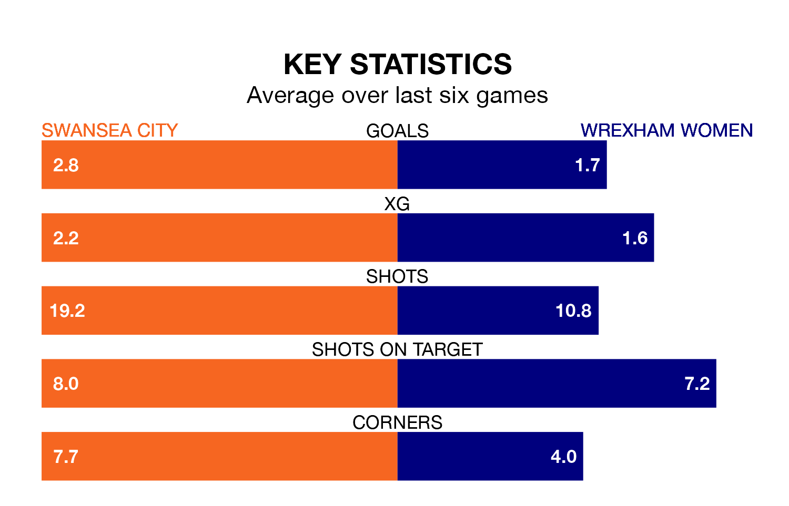

Two of the Welsh Premier Women's League's top sides face each other in Sunday's early kick-off, when second-placed Swansea City host third-placed Wrexham Women.
Swansea have picked up 10 wins and two draws from 14 games so far this season, and sit three points above the visitors going into the 2pm match.
Wrexham, meanwhile, have won nine and drawn two, picking up 29 points.
With 35 goals in 14 games so far this season, Swansea are the league's second-highest scorers with 2.5 goals per game. And they are conceding fewer than average, letting in 12 goals at a rate of 0.9 per game.
Wrexham are also above average scorers, with 2.1 goals per game, compared to a league average of 1.8. They have conceded 1.4 goals per game.
City are in fantastic form in the Welsh Premier Women's League, with five wins and a draw from their last six games.
With four wins and a draw over that period, the away side's form is worse – they have taken 13 points from 18, compared to the Swans' 16.
Over the last two years, Swansea and Wrexham have played each other twice. Swansea won one of them and they drew the other.
Their last meeting was on November 19, when Swansea won 2-1 at home.
Swansea's last match was on February 11, a 2-0 win against Cardiff City.
Wrexham drew 2-2 with Cardiff Metropolitan last time out, also on February 11.
Updated: 09:34 (UTC), 08/03/24